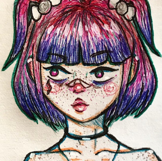
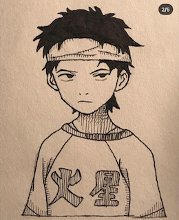
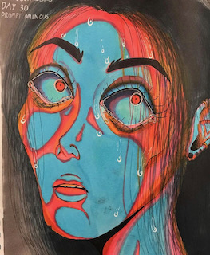
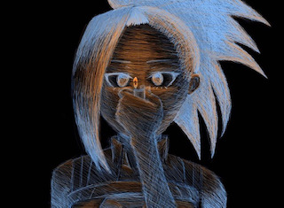
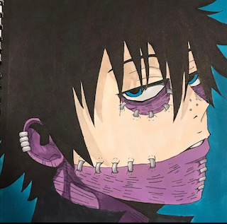
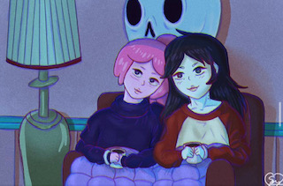
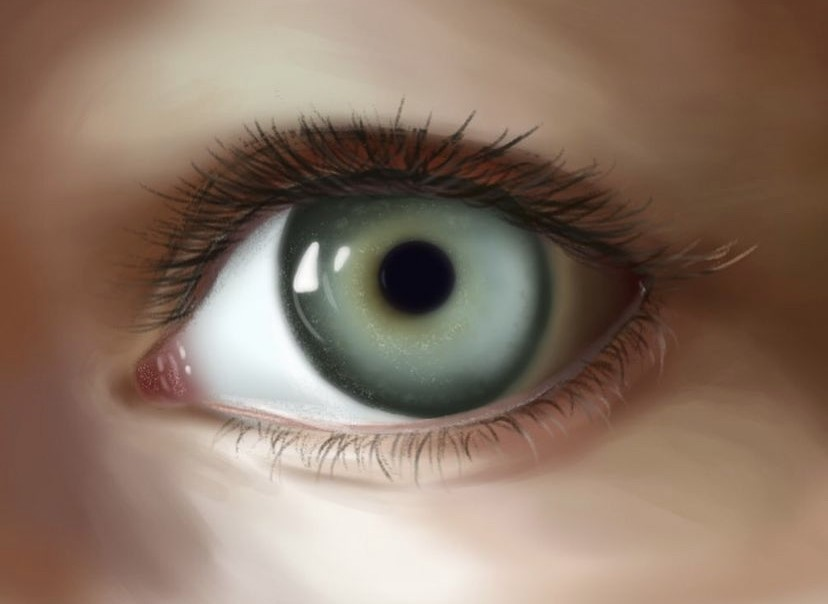

Art
Not only does Shaanze express themselves through music and fashion, just like ever creative person they also love to express themselves through art!
From a young age, Shaanze was naturally gifted when it came to art and had not taken any art lessons until a grade 9 art class. This is what led them to expirement with different mediums and what let them find their own personal drawing style. Below you can find a few of Shaanzes latest art works.
Shaanze Noors Art
      If you would like to see more of Shaanze Noors art, Click here to see thier art account on Instagram!